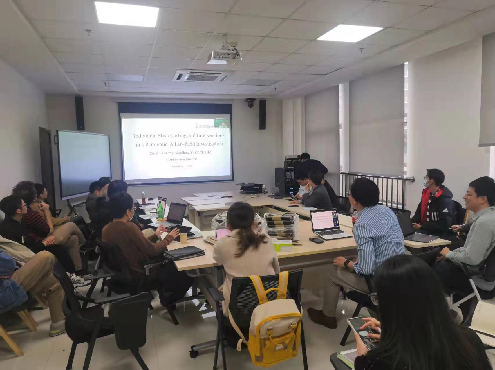

应西南财经大学中国行为经济与行为金融中心主任雷震教授邀请，叶茂亮副教授于2021年11月11日为该中心开展题为“Misreporting Private Information in a Pandemic: A Lab-Field Investigation”的线上讲座。
讲座得到了该中心各位老师的热烈响应与讨论，雷震、周恕弘、Inácio Bó、Lawrence Choo、Joshua Lanier等老师都提出了建设性意见。
讲座摘要：公民如实报告一些私人信息，如接触史和症状，是有效追踪接触者的关键，而这又是阻止大流行病传播的关键。在COVID-19大流行中已经观察到了许多瞒报谎报行为。但人们对与这些行为相关的个人特征知之甚少，也不知道如何在大流行病中促进真实的报告。我们的预注册实验室-现场研究调查了一套全面的经济偏好与大流行病中各种瞒报谎报行为之间的关联。我们还测试了几种促进真实报告的方法的有效性。我们的研究结果表明，社会偏好和大流行病中的瞒报谎报行为之间有很强的联系，特别是撒谎偏好和这些行为之间的联系。在几个领域的风险态度也被发现与它们密切相关。此外，我们发现，相关的社会影响是误报决策的一个关键因素。我们的结果对抗击大流行的政策有丰富的意义，例如，在预测大流行病的传播时要考虑人口的哪些特征，以及如何实施有效的干预措施来促进真实的报告。该研究得到了国家自然科学基金和深圳市哲学社会科学规划项目研究项目的资助。
Abstract: Citizens’ truthful reporting of some private information, e.g., contact history and symptoms, is the key to effective contact tracing, which in turn is crucial for stopping the spread of a pandemic. Many misreporting behaviors have been observed in the COVID-19 pandemic. But little is known about individual characteristics that are associated with these behaviors, neither about how to promote truthful reporting in a pandemic. Our pre-registered lab-field study investigates the association between a comprehensive set of economic preferences and various misreporting behaviors in the pandemic. We also test the effectiveness of several methods in promoting truthful reporting. Our results indicate a strong link between social preferences and misreporting behaviors in the pandemic, especially between lying preferences and these behaviors. Risk attitudes in several domains are also found closely related to them. Moreover, we find that the associated social cost is a key factor that enters misreporting decision making. Our results have rich implications for pandemic-fighting policies, e.g., which traits of the population to take into account when forecasting the spread of a pandemic, and how to implement effective interventions to promote truthful reporting.
